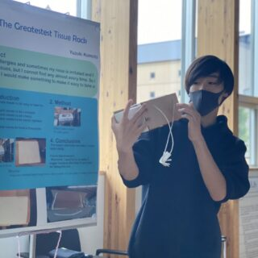
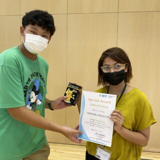

I'm N&A member, so I will introduce about N&A.N&A's activities include mountain climbing, river sports, skiing, camping, etc. Through these activities, we enjoy being in touch with nature. Through these activities, students enjoy being in touch with nature.
Students will engage in project-based learning activities to discover problems in daily life and the environment and create solutions. Through projects, students learn basic knowledge and methods for quickly prototyping ideas, and enjoy value creation by giving shape to their ideas. 
Students presented their STEM-related projects that they had worked on during the summer vacation and were judged by faculty members. This was the first time in the history of the STEM Fair that there were two first place winners.
